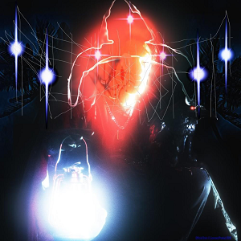
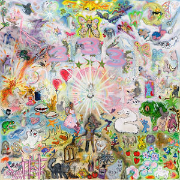
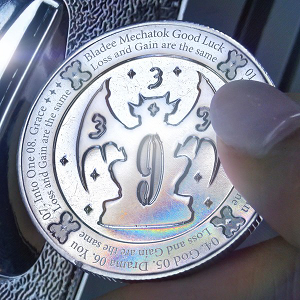
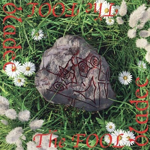
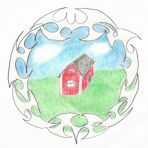

BLADEE
HOME
ALBUMS
MIX-TAPES
EPS
COLLAB PRJS





![eversince's cover art, there's a black and white drawn portrait of bladee from the torso up, it's rectangular and centered in the middle of the image. Bladee has short parted hair, black goop-like tears falling from his eyes, and is wearing a black suit. Coming in from the left side of the image is a concert ticket stub with the words 'bladee, eversince, and dg', on it. The ticket is white, black, blue, and light blue. It covers the middle left of the portrait, blocking bladee's right arm and chest. On the right side are spiderweb-like etchings that look like words.](../img/alb/Eversince.png)
![exeter's cover art, there's a strange painted floating head with large orange curls for hair, and black and yellow eyes, nose, and mouth. There is a drawn red and yellow pointed cross figure where it's neck should be. There are painted floating hands on its sides that are red outlined in yellow. There is some sort of drawn yellow and white pointed figure outlined in red in front of the spirt-like head. It looks as if it's casting a spell. Behind the face on it's left and right are gray, red, and blue shield-like figures, each with a weird face in them as if they're cursed. The one on the left is upside down and has a cross-like figure coming out the bottom. The right one has a cross coming out the top.](../img/alb/Exeter.png)
![spiderr's cover art, it depicts bladee from the thighs up, shirtless with a black spiked belt and white pants, he's unrealistically muscular and has long dark brown hair, like the western depiction of Jesus. On his head are markings that look etched. He's holding raspberries in his right hand with a black widow-like spider crawling on them with a thin spiderweb in the foreground. It's done as if you're looking at bladee from below, making him look larger and almost godlike. In the foggy background are cliffs, clouds, and what looks like a castle.](../img/alb/Spiderr.png)